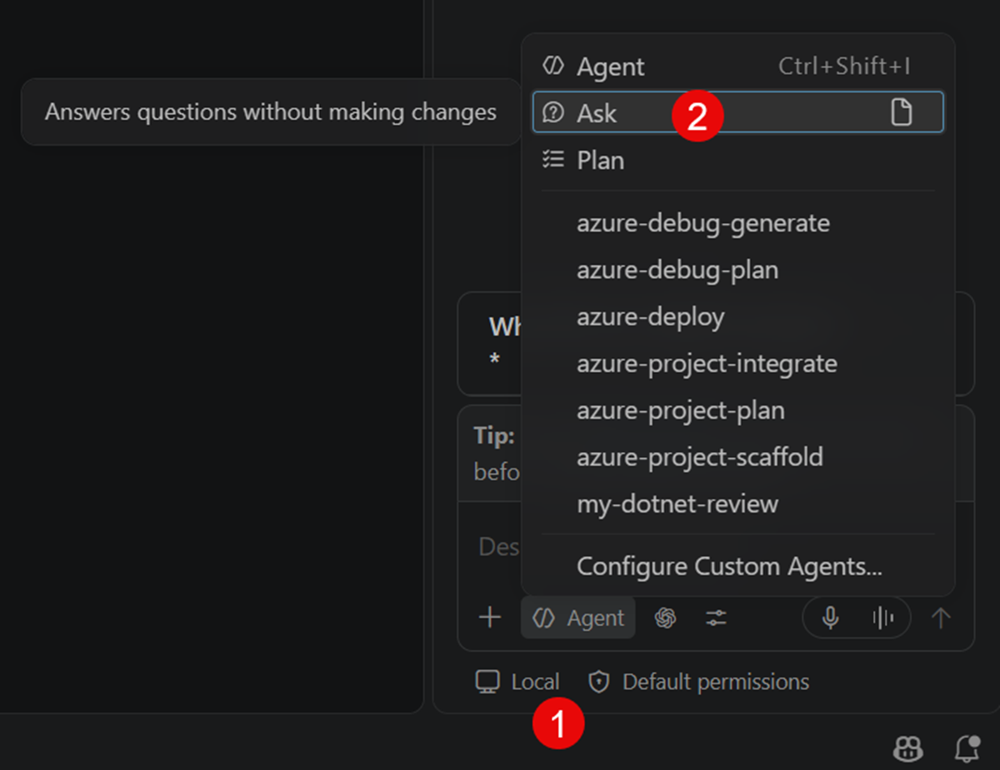
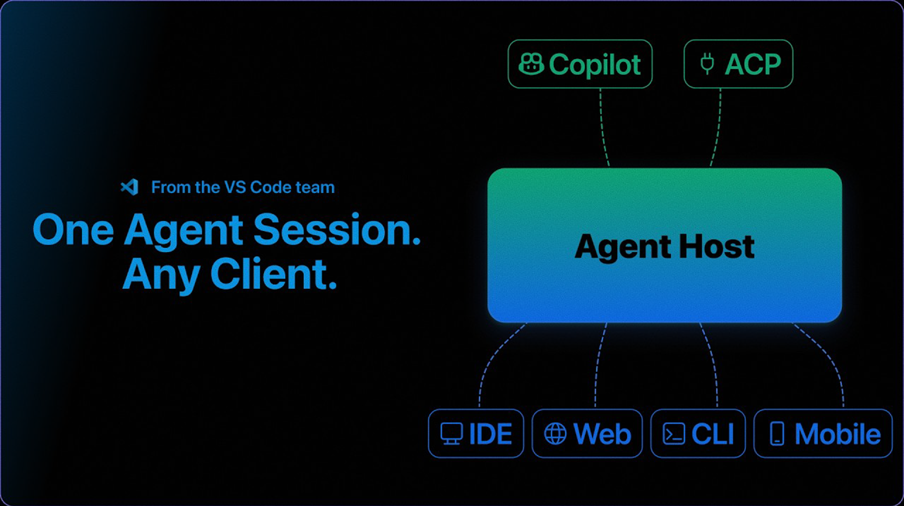
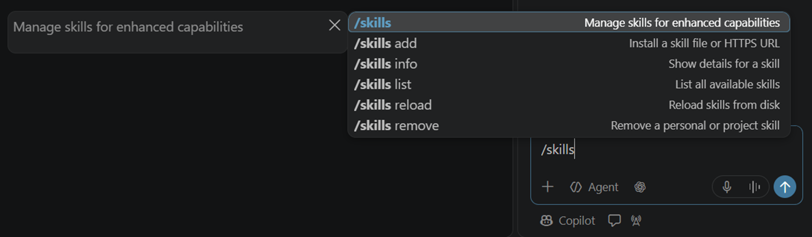

GitHub Copilot Agent Mode 是一種新的互動模式，允許使用者透所謂『代理（Agent』來自動化各種開發任務。這些代理可以根據使用者的指示執行複雜的工作流程，並與其他工具和服務整合，提升開發效率。
除此之外，GitHub Copilot Agent Mode 由於底層跟 VSCode 編輯器本身抽離，因此可以在跨越不同session的情況下持續運作，保持代理的狀態和上下文，進一步提升開發效率。
https://code.visualstudio.com/blogs/2026/08/26/agent-host-architecture
圖中展示了 GitHub Copilot Agent Mode 的主機架構，說明代理如何在不同的 session 中保持狀態，並與 VSCode 編輯器分離運作。
2021
Code Completion
⬇️
2023
Chat
⬇️
2024
Edit
⬇️
2025+
Agent
專門設計用來與代理互動的新UI介面，透過這視窗發送指令給代理，並查看代理的回應和執行狀態，使用者在此能輕鬆管理和控制代理的行為。
原本 GitHub Copilot Chat 專屬互動介面，在引入 Agent Mode 後，變為 半獨立 的通用聊天介面，使用者可以在此與代理進行互動，並查看代理的回應和執行狀態。
Tip
在 VSCode 的介面拉伸左右以及下方的面板尺寸之後，如果要恢復原始比例，在該面板對中間編輯區域的邊緣框上用滑鼠雙擊即可恢復。
| 模式 | 能力 |
|---|---|
| Chat | 單純問答 |
| Edit | 修改檔案 |
| Agent | 自動/半自動執行任務 |
Chat 是顧問，Agent 是工程師
Note
目前 VSCode Chat View 將 GitHub Copilot Chat 的 Ask/Plan 功能藏在 Local Harness 模式中才選得到：

Agent 使用的 Harness 和 LLM 是不一樣的東西，Harness 是用來管理代理的執行環境和資源，而 LLM 則是提供語言理解和生成能力的模型。使用者在設定代理時，可分別選擇合適的 Harness 和 LLM，以確保代理能正確執行任務。
目前 VSCode 除了 GitHub Copilot 提供的 Local Harness 外，還支援其他類型的 Harness，例如 Remote Harness，可將工作配發到 GitHub.com 的 Cloud Agent 環境中執行。
並且也開始支援 Claude Code, Codex 等第三方 Harness extension，使用者能夠在 VSCode 中使用更多不同的代理執行環境。
Note
目前 VSCode 支援的第三方 Harness 與 LLM 名稱會讓使用者混淆，在與團隊成員溝通時需注意。
Understand
↓
Plan
↓
Implement
↓
Build
↓
Validate
↓
Fix(done)
通常在 Implement & Build 階段，代理產出的結果會無法立即達到最終目標，需要經過 Validate 與 Fix 階段的檢查與修正，然後回去重新修改 Implement 的內容再繼續，才能確保最終成果符合預期。
Ask mode 就類似傳統的 LLM 問答模式，使用者直接向模型提出問題，模型給出回答；而 Agent mode 則是透過代理自動或半自動地執行任務，可能涉及多步驟的計畫與執行。
GitHub Copilot CLI 是一個命令列工具，允許使用者在終端機中與 GitHub Copilot 互動，執行各種與代理相關的操作，與 VSCode 中的 GitHub Copilot Chat 類似，但更適合在命令列環境下使用。
https://docs.github.com/copilot/how-tos/copilot-cli
https://github.com/github/copilot-cli
GitHub Copilot Custom Instruction 允許使用者自訂代理的行為與回應方式，使用者可以設定代理的角色、語氣、偏好等，以便代理在與使用者互動時能更符合使用者的需求與期望。
通常我們會重複使用一些特定的要求或是 Prompt 模板:
這時候就可以透過 Custom Instructions 來設定代理的行為與回應方式，避免每次都需要手動輸入相同的內容。
使用 Custom Instructions 可以讓代理在接收到 User Prompt 後，加入使用者設定的行為與回應方式進行處理，並結合 Workspace Context 與 Source Code 來生成最終的回應。
User Prompt
↓
Custom Instructions
↓
Workspace Context
↓
Source Code
↓
LLM generates response based on above inputs
GitHub Copilot Custom Instructions 可以分為專案全域與針對特定檔案類這兩種：
專案全域作用：
.github/
└─ copilot-instructions.md
針對特定檔案類型：
.github/instructions/abcd/
└─ abcd.instructions.md
.github/instructions/defg/
└─ defg.instructions.md
除了手動自行在 .github 目錄內建立 Custom Instructions 的純文字檔案之外，
全域 Custom Instructions 可在 VSCode Chat View 的 GitHub Copilot 或是 GitHub Copilot CLI 中下 /init 指令建立。
這兩種建立的方式都會掃描整個專案目錄，並自動生成對應的全域 Custom Instructions 檔案，省去自己手動從完全空白建立的麻煩。
在使用 /init 指令建立時，AI 會主動去掃描是否有其他第三方/公訂標準的 Markdown files，並將其內容納入考量，以生成更完整的 Custom Instructions。
典型的 Custom Instructions 內容通常會包括以下幾個部分
（依據專案大小 AI 會自動調整）：
# Repository Context (Repository Guide)
(## Projects and architecture)
這部分通常包含專案的基本資訊、目錄結構、重要檔案說明等，讓代理能夠理解專案的整體背景。
## Build and run (Build, test, and analysis)
這部分通常包含專案的建置與執行方式，例如所需的依賴、建置指令、執行指令等，讓代理能夠理解如何在本地環境中運行專案。
## Architecture
這部分通常包含專案的整體架構設計、模組劃分、主要元件及其關係等，讓代理能夠理解專案的結構與設計理念。
## Code and configuration conventions (Project-specific conventions)
這部分通常包含專案的程式碼風格、命名規範、配置檔案結構等，讓代理能夠理解專案的程式碼與配置慣例。可參見官方說明：Writing Effective Custom Instructions
Custom Instruction 不需要一定得用英文，可用專案團隊習慣語言撰寫。
如範例所示
可比較，將 Lab1 產生的原始碼檔案都 git clean -dxf 檔案內容重設後，再依照 Lab2 的步驟建立 Custom Instruction 是否有不同。
或是建立 Custom Instruction 後，再下Prompt:
觀察是否 AI 能夠根據建立的 Custom Instruction 正確生成對應 Clean Architecture 的程式碼或回應。
在專案中，團隊可能會有一些標準或慣例，例如程式碼風格、命名規範、提交訊息格式等。這些標準可以寫成 Custom Instructions，作為 AI 的上下文，幫助 AI 在生成程式碼或回應時遵循團隊的規範。
傳統沒導入 AI 前，團隊的標準通常只會以文件或口頭方式傳達，容易因人而異，且新成員需要花時間熟悉：
Wiki
Coding Standard
Confluence/Jira web site
↓
Human Brain 導入 AI 後，將團隊標準寫入 Custom Instructions，可以讓 AI 在生成程式碼或回應時自動遵循這些標準，減少人為差異，提升團隊協作效率：
Copilot Instructions
↓
Copilot (AI Agent)Note
GitHu Copilot Agent Mode 可將 AI 代理的執行範圍超脫到 Visual Studio / VSCode 編輯器之外，Agent Host 讓 AI 能夠在更多場景中協助開發者完成任務，例如在命令列、CI/CD 流程中，甚至與其他工具整合，提升開發效率與自動化能力。

Analyze Project
↓
Create Plan
↓
Modify Files
↓
Build
↓
Fix Errors
使用 Agent Mode 進行程式功能開發時，建議遵循以下最佳實踐，以確保開發過程高效且可控：
✅ 小步驟
✅ 看 Plan
✅ 定期 Commit 成果檔案
✅ 驗證結果
避免一次命令下達過多操作，應將任務拆解成小步驟，逐步執行，確保你有辦法審核每一步的結果，並確認每一步都能正確完成。
可嘗試增加/減少目前專案的功能，觀察 AI 代理在不同情境下的表現，並驗證其是否能正確執行任務。
在本章中，我們介紹了 GitHub Copilot 的 Agent Mode，並展示了如何使用 Agent Mode 進行程式開發。透過 Agent Mode，AI 代理可以超脫編輯器，協助開發者完成從分析專案、建立計畫、修改檔案到建置與修正錯誤的整個開發流程。同時，我們也介紹了使用 Agent Mode 的最佳實踐，確保開發過程高效且可控。
AI Agent 可以透過不同的 Skill 來完成特定任務，例如程式碼生成、測試、部署等。每個 Skill 都封裝了一組能力，讓 AI 能夠在特定場景下高效執行任務。
Important
可將 Agent Skill 視為寫給 AI 的插件，專門處理特定任務。
Note
Agent Skill 是一種讓LLM讀的行為操作 說明書，指導 AI 在特定任務中應該如何行動。
Agent Skill 的結構通常包含以下幾個部分：
在 GH Copilot 將放在 .github/skills/ 目錄下，每個 Skill 對應一個子目錄，內含 Skill 的定義檔案。
.github/skills/
└─ my-skill/
├─ SKILL.md
└─ ...除了隱含式的在 Prompt 中讓代理自己去理解到應該使用特定 Skill 外，
GitHub Copilot Chat 也提供 slash command (/skills) 來明確指定LLM要去讀哪個 Agent Skill來使用。
官方說明：
https://code.visualstudio.com/docs/agent-customization/agent-skills#_use-skills-as-slash-commands

讓 GitHub Copilot 參與整個 SDLC(Software Development Life Cycle)。
傳統的軟體開發流程中，開發者需要手動完成需求分析、設計、實作、測試與部署等各個階段，過程繁瑣且容易出錯。
需求
↓
設計
↓
開發
↓
測試
在 Agentic AI Workflow 中，GitHub Copilot 會參與整個軟體開發生命週期，協助開發者完成需求分析、設計、實作、測試與部署等各個階段，提升開發效率並降低錯誤率。
需求分析
↓
設計草稿
↓
程式開發
↓
測試產生
↓
文件產生
↓
部署
大部分團隊目前還停留在 Level 1 或 Level 2，而真正的生產力提升通常從 Level 3 開始出現，Level 4 才開始形成團隊資產，Level 5 則是 Agentic Development 的目標狀態。
Level 1
Chat
Level 2
Instructions
Level 3
Agent
Level 4
Skills
Level 5
Agentic SDLC
* 官方舊版WorkShop：https://github.com/pkal42/github-copilot-agents-in-sdlc/blob/main/docs/README.md
不只是寫程式的人
而是：
能設計 Agent、規範 Agent、協作 Agent 的工程師。